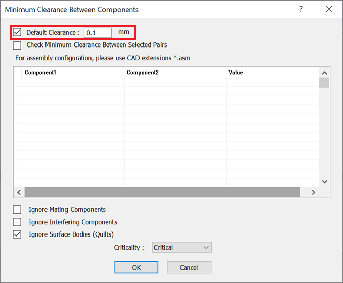
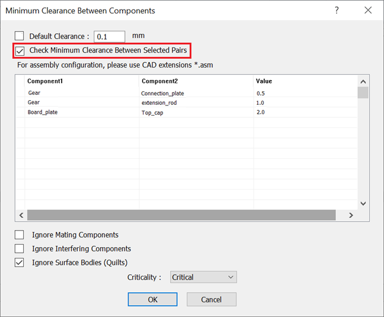
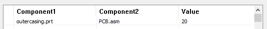
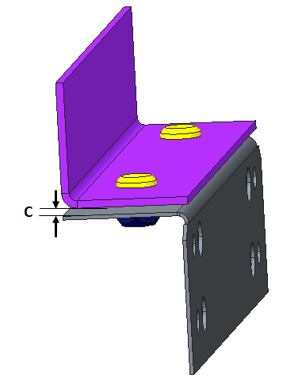

アセンブリ内の任意の2つのコンポーネント間の最小クリアランスは、ユーザーが指定した値以上である必要があります。
以下のタイプ間のクリアランスがチェックされます：
パーツ同士
パーツとサブアセンブリ
サブアセンブリ同士
コンポーネント間の最小クリアランス ルールは、以下の3つの方法で構成できます：
デフォルト クリアランスをチェック
このオプションはデフォルトで選択されています。クリアランス値は、アセンブリ内のすべてのパーツの組み合わせ（全ペア）間でチェックされます。

選択したペア間の最小クリアランスをチェック
このオプションでは、アセンブリ内で選択したコンポーネントのペア間についてクリアランスがチェックされます。

選択したペア間の最小クリアランスをチェック（パーツとサブアセンブリ）
パーツとサブアセンブリの構成の場合、クリアランスの検証は2つのコンポーネント（つまり、コンポーネント1とコンポーネント2）の間で行われます。ここでは、サブアセンブリは1つのコンポーネントとして扱われます。

上記の構成では、ルールは1件の失敗（Failure）のみを表示します。つまり、構成したパーツとサブアセンブリ間の最小クリアランスです。
注記:
検証される各コンポーネントのペアについて、最小クリアランスは単一のインスタンスとして報告されます。
ルール構成でコンポーネントを追加する方法は3つあります：
注記:
必要なファイルを参照して追加した後、ユーザーは表内のファイル拡張子を削除する必要があります。
Gear |
Connection_plate |
0.5 |
Gear |
Extension_rod |
1.0 |
Board_Plate |
Top_cap |
2.0 |
標準テンプレート形式
入力 |
解釈 |
ABC |
ユーザーが名前のみを構成した場合、それはパーツとして扱われます。 |
*ABC* |
パーツ名に abc または ABC を含むパーツ。 |
* |
すべてのパーツ。 |
*_M32 |
末尾が _M32 で終わるすべてのパーツ。 |
*_pcb_*.asm |
ユーザーがCAD拡張子を構成している場合、このルールはアセンブリとして扱われます。サブアセンブリ名に _pcb_ を含むもの。 |
注記:
ファイル名は大文字と小文字を区別しません。
拘束（Mate）コンポーネントを無視：検証において拘束（Mate）コンポーネントを無視するには、このチェックボックスを選択します。
サーフェスボディ（Quilt）を無視：検証においてサーフェスボディを無視するには、このチェックボックスを選択します。
干渉しているコンポーネントを無視：検証において干渉しているコンポーネントを無視するには、このチェックボックスを選択します。

C = コンポーネント間のクリアランス
注記:
このルールは、DFMPro Settings に基づき、トップレベル アセンブリ パーツで実行できます。